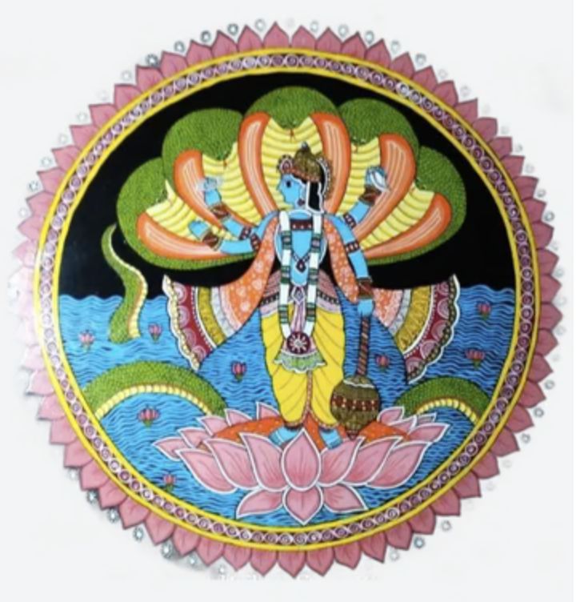

Tikuli art feels like luxury turned into storytelling. It has a glossy, jewel-like finish that instantly catches the eye. The paintings often depict divine love—especially Radha and Krishna—surrounded by rich patterns and gold detailing. The romance here is graceful and refined. It’s not raw like Manjusha or vibrant like Madhubani—it’s polished, almost royal. Every line feels deliberate, every color controlled, giving a sense of beauty, devotion, and elegance.
Tikuli art originated in Patna, Bihar, and has a very unique history. • The word “Tikuli” comes from “bindi”, the decorative dot worn on the forehead • Originally, Tikuli art was used to make glass bindis for women • During the Mughal period, it became popular as a luxury decorative craft • Later, artists transformed it into a painting style using wooden boards instead of glass, making it more durable In the 20th century, the art was revived and adapted into modern decorative paintings, helping it survive in changing times.
Tikuli art is known for its precision and finish: • Glossy Surface Finish Paintings are polished to give a shiny, enamel-like look • Fine Brushwork Extremely thin brushes are used for intricate detailing • Gold Foil or Metallic Colors Adds richness and a royal feel • Symmetry & Balance Designs are carefully structured and evenly spaced • Strong Outlines + Filled Colors Similar to Madhubani but more controlled and refined Themes Mythology, royal life, nature, and decorative patterns
Tikuli art was traditionally practiced by skilled artisans in Patna, often as part of small craft industries. • Unlike Madhubani (mostly women), Tikuli involved specialized craftsmen • The art declined at one point but was revived by local artists and government support •Today, it is a blend of traditional craftsmanship and modern design